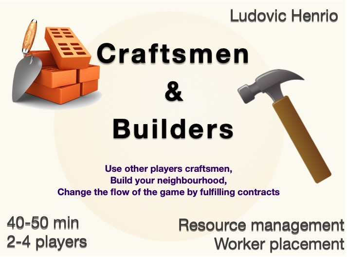

Game characteristics
- 2 - 4 players
- 40-50 min approx.
- BGG complexity ~2.3
- Main mechanisms: resource management, worker placement,
engine building
A strategy game where you
will have to recruit the right craftsman.
The most novel aspect of this game is the recruitment and
usage of craftsmen. Each round, each player will recruit one
craftsman for the next round. Each craftsman offers several
places for the players to place workers and obtain resources BUT
placing a worker has a cost that whould be paid to the owner
of the craftsman! And you cannot place a worker on your own
craftsman. Craftsmen and builders thus also relies on simple
resource management and production engine building.
Additionally, players can fulfill contracts by gathering
badges drawn on the buildings, this provides an immediate
bonus strong enough to significantly help the player realising
it.
|

|